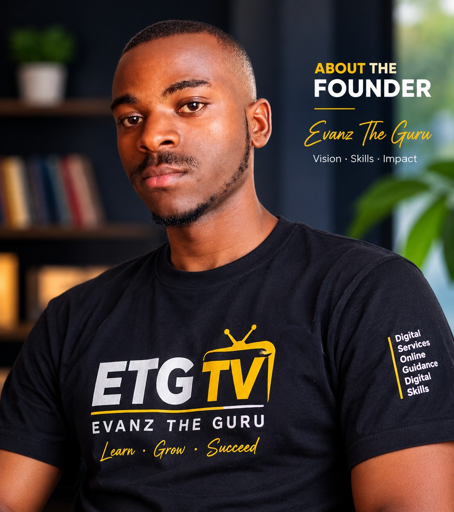

Founder of CYBERGURU ONLINE CAFE and ETG TV
Who I Am
My name is Evanz, popularly known as Evanz The Guru, and I am the person behind CYBERGURU ONLINE CAFE and ETG TV.
Every great journey begins with a willingness to learn, the courage to try, and the determination not to give up. My journey into cyber services and digital technology is built on these principles.
How My Journey Began
My journey into cyber services and digital technology did not begin in a formal classroom. I did not attend a formal cyber-services or technology class. Instead, I developed my knowledge through learning online, conducting research, practising what I learned, and asking questions of people with more experience.
Step by step, I continued discovering new things, improving my skills, and learning how digital services work. I came to call myself The Guru not because I know everything, but because I believe in continuous learning, sharing knowledge, and helping others understand technology.
Why I Started Building Websites
Creating this website is another important part of my journey. I am not a professional website developer, and I have never attended a formal website-development class.
For approximately two years, I have been trying to learn how to create websites and put them online. Along the way, I have experimented, made mistakes, searched for solutions, learned new things, and kept trying even when the process was difficult.
CYBERGURU ONLINE CAFE is my first website that I have worked to create and publish online. It represents my effort, curiosity, patience, and determination to turn what I have been learning into something useful for other people.
My Vision for CYBERGURU ONLINE CAFE
My goal is to make digital services easier to understand and access. Through CYBERGURU ONLINE CAFE and ETG TV, I aim to help people navigate online applications, government digital services, computer and cyber services, and practical digital skills.
I want this platform to be useful to people who need guidance with digital services, as well as those who want to learn new skills and become more confident using technology.
I Am Still Learning
I am still learning, and I believe there is always something new to discover. I do not claim to know everything. Instead, I believe that patience, practice, curiosity and a willingness to ask questions can help us grow.
I hope my journey encourages someone else to start, learn, and keep moving forward, even without formal training. You can begin with what you know today and improve as you go.
— Evanz The Guru
Let's Grow Together
Thank you for taking the time to learn about my journey. Explore our digital services and learning resources, and join me as I continue growing in the digital world.
Explore Our ServicesContact Us on WhatsApp